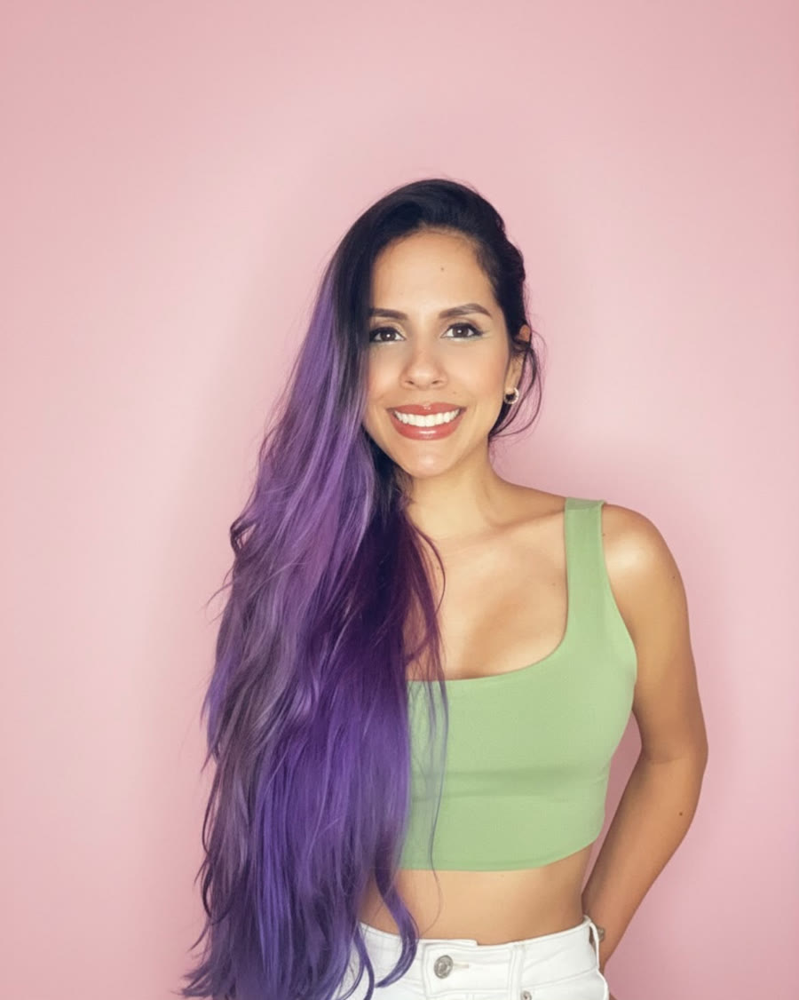

Sara Márquez
Community Manager
Contenido para redes que muestra a la persona real detrás de la marca.

Sobre mí
Ayudo a las marcas a construir su presencia digital y a comunicar su mensaje en redes sociales a través del contenido.
Mi enfoque es sencillo: que cada persona comunique de forma creativa y natural, y que en cámara se vea el personaje que es en la vida real.
Qué hago
Construyo la presencia digital de tu marca y cuido que tu mensaje llegue claro.
Desde la idea hasta el video listo para publicar.
Piezas gráficas simples, limpias y coherentes con tu marca.
Te guío para que hables con naturalidad y confianza.
Portafolio
Lo que logro
Más interacción y más conexión con tu comunidad, gracias a contenido que se siente real. Y algo que mis clientes valoran todavía más: la confianza en sí mismos para mostrarse en redes.
Por qué trabajar conmigo
Mis clientes siempre destacan dos cosas: que aprenden mucho en el proceso y que llego con buena actitud y disposición.
Cuéntame de tu marca y armemos contenido que se parezca a ti.
Sara Márquez · Community Manager